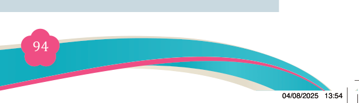
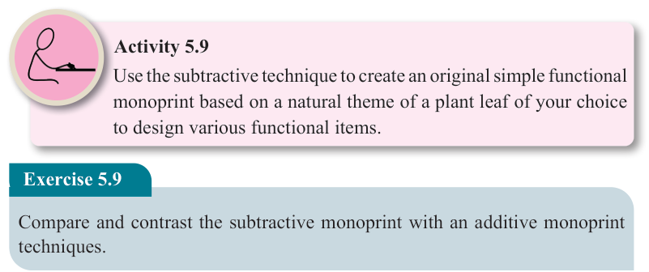
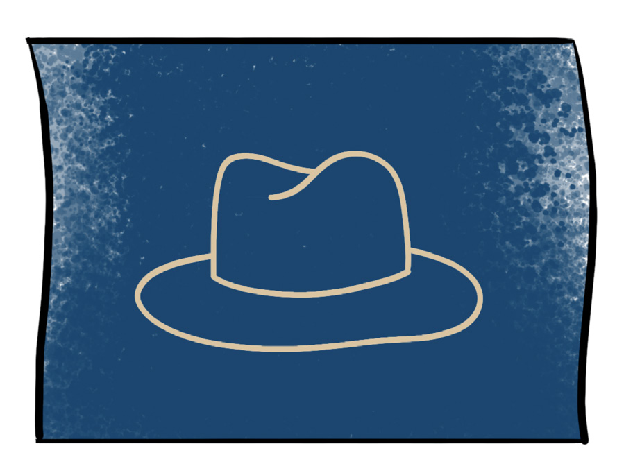
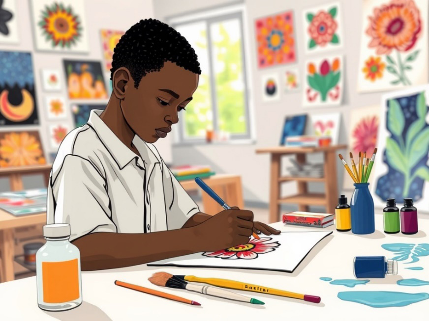

<!DOCTYPE html>
<html lang="en">

<head>
    <meta charset="utf-8" />
    <meta name="viewport" content="width=558, height=768" />
    <title>Fine Art for Secondary Schools</title>
    <meta name="title-id" content="pg100_sec001" />
    <meta name="page-section-id" content="100" />
    <link href="./content/tailwind_output.css" rel="stylesheet">
    <link href="./assets/libs/fontawesome/css/all.min.css" rel="stylesheet">
    <link href="./assets/fonts.css" rel="stylesheet">
    <link rel="preconnect" href="https://fonts.googleapis.com">
    <link rel="preconnect" href="https://fonts.gstatic.com" crossorigin>
    <link href="https://fonts.googleapis.com/css2?family=Caladea&amp;family=Tinos&amp;family=Arimo&amp;display=swap" rel="stylesheet">
    <style>
      html { width: 100%; height: 100%; background: #e5e7eb; }
      body { background: #e5e7eb; }
      #content {
        visibility: hidden;
        background: #fff;
        outline: 1px solid rgba(15, 23, 42, 0.28);
        box-shadow: 0 10px 30px rgba(15, 23, 42, 0.22);
      }
    </style>
    <noscript><style>#content { visibility: visible !important; }</style></noscript>
</head>

<body style="margin:0;overflow:hidden;width:100%;height:100%">
    <main>
      <div id="content" data-fl-reference-width="558" style="position:relative;width:558px;height:768px;margin:0 auto;overflow:hidden">
  
  
  
  
  
  
  
  
  
  
  <p data-id="pg100_p000" data-adt-raster-text="1" data-adt-reading-order="8" data-segments="[{&quot;text&quot;:&quot;Fine Art for Secondary Schools&quot;,&quot;style&quot;:{&quot;font-family&quot;:&quot;Caladea,Merriweather,serif&quot;,&quot;font-size&quot;:&quot;9px&quot;,&quot;color&quot;:&quot;#231f20&quot;}}]" data-adt-fit="1" style="position:absolute;z-index:2;top:49px;left:94px;line-height:9px;width:120px;height:9px;white-space:nowrap;opacity:0"><span style="font-family:Caladea,Merriweather,serif;font-size:9px;color:#231f20">Fine Art for Secondary Schools</span></p>
  
  <p data-id="pg100_p001" data-adt-raster-text="1" data-adt-reading-order="28" data-segments="[{&quot;text&quot;:&quot;94&quot;,&quot;style&quot;:{&quot;font-family&quot;:&quot;Caladea,Merriweather,serif&quot;,&quot;font-size&quot;:&quot;12px&quot;,&quot;color&quot;:&quot;#ffffff&quot;}}]" data-adt-fit="1" style="position:absolute;z-index:2;top:704px;left:268px;line-height:12px;width:13px;height:12px;white-space:nowrap;opacity:0"><span style="font-family:Caladea,Merriweather,serif;font-size:12px;color:#ffffff">94</span></p>
  
  <p data-id="pg100_p002" data-adt-raster-text="1" data-adt-reading-order="27" data-segments="[{&quot;text&quot;:&quot;Student&#x2019;s Book&quot;,&quot;style&quot;:{&quot;font-family&quot;:&quot;Tinos,&apos;Times New Roman&apos;,Times,Merriweather,serif&quot;,&quot;font-size&quot;:&quot;9px&quot;,&quot;color&quot;:&quot;#231f20&quot;}},{&quot;text&quot;:&quot; Form &quot;,&quot;style&quot;:{&quot;font-family&quot;:&quot;Tinos,&apos;Times New Roman&apos;,Times,Merriweather,serif&quot;,&quot;font-size&quot;:&quot;9px&quot;,&quot;color&quot;:&quot;#231f20&quot;,&quot;font-weight&quot;:&quot;bold&quot;}},{&quot;text&quot;:&quot;Two&quot;,&quot;style&quot;:{&quot;font-family&quot;:&quot;Tinos,&apos;Times New Roman&apos;,Times,Merriweather,serif&quot;,&quot;font-size&quot;:&quot;9px&quot;,&quot;color&quot;:&quot;#231f20&quot;,&quot;font-weight&quot;:&quot;bold&quot;,&quot;font-style&quot;:&quot;italic&quot;}}]" data-adt-fit="1" style="position:absolute;z-index:2;top:702px;left:94px;line-height:9px;width:97px;height:12px;white-space:nowrap;opacity:0"><span style="font-family:Tinos,&apos;Times New Roman&apos;,Times,Merriweather,serif;font-size:9px;color:#231f20">Student&#x2019;s Book</span><span style="font-family:Tinos,&apos;Times New Roman&apos;,Times,Merriweather,serif;font-size:9px;color:#231f20;font-weight:bold"> Form </span><span style="font-family:Tinos,&apos;Times New Roman&apos;,Times,Merriweather,serif;font-size:9px;color:#231f20;font-weight:bold;font-style:italic">Two</span></p>
  
  
  
  <p data-id="pg100_p003" data-adt-reading-order="10" data-segments="[{&quot;text&quot;:&quot;Figure 5.16: &quot;,&quot;style&quot;:{&quot;font-family&quot;:&quot;Tinos,&apos;Times New Roman&apos;,Times,Merriweather,serif&quot;,&quot;font-size&quot;:&quot;10px&quot;,&quot;color&quot;:&quot;#231f20&quot;,&quot;font-weight&quot;:&quot;bold&quot;}},{&quot;text&quot;:&quot;A complete subtractive mono print technique of a hat image&quot;,&quot;style&quot;:{&quot;font-family&quot;:&quot;Tinos,&apos;Times New Roman&apos;,Times,Merriweather,serif&quot;,&quot;font-size&quot;:&quot;10px&quot;,&quot;color&quot;:&quot;#231f20&quot;,&quot;font-style&quot;:&quot;italic&quot;}}]" data-adt-fit="1" style="position:absolute;z-index:2;top:236px;left:132px;line-height:10px;width:293px;height:13px;white-space:nowrap"><span style="font-family:Tinos,&apos;Times New Roman&apos;,Times,Merriweather,serif;font-size:10px;color:#231f20;font-weight:bold">Figure 5.16: </span><span style="font-family:Tinos,&apos;Times New Roman&apos;,Times,Merriweather,serif;font-size:10px;color:#231f20;font-style:italic">A complete subtractive mono print technique of a hat image</span></p>
  
  <p data-id="pg100_p004" data-adt-reading-order="11" data-segments="[{&quot;text&quot;:&quot;Step 7: \u0007&quot;,&quot;style&quot;:{&quot;font-family&quot;:&quot;Tinos,&apos;Times New Roman&apos;,Times,Merriweather,serif&quot;,&quot;font-size&quot;:&quot;12px&quot;,&quot;color&quot;:&quot;#231f20&quot;,&quot;font-weight&quot;:&quot;bold&quot;}},{&quot;text&quot;:&quot;Clean up your workspace: Clean the plate, brayer, and tools with appropriate&quot;,&quot;style&quot;:{&quot;font-family&quot;:&quot;Tinos,&apos;Times New Roman&apos;,Times,Merriweather,serif&quot;,&quot;font-size&quot;:&quot;12px&quot;,&quot;color&quot;:&quot;#231f20&quot;}}]" data-adt-fit="1" style="position:absolute;z-index:2;top:255px;left:86px;line-height:12px;width:386px;height:16px;white-space:nowrap"><span style="font-family:Tinos,&apos;Times New Roman&apos;,Times,Merriweather,serif;font-size:12px;color:#231f20;font-weight:bold">Step 7: </span><span style="font-family:Tinos,&apos;Times New Roman&apos;,Times,Merriweather,serif;font-size:12px;color:#231f20">Clean up your workspace: Clean the plate, brayer, and tools with appropriate</span></p>
  <p data-id="pg100_p005" data-adt-reading-order="12" data-segments="[{&quot;text&quot;:&quot;solvent (for oil ink) or water (for water-based ink). Store materials properly&quot;,&quot;style&quot;:{&quot;font-family&quot;:&quot;Tinos,&apos;Times New Roman&apos;,Times,Merriweather,serif&quot;,&quot;font-size&quot;:&quot;11.879040718078613px&quot;,&quot;color&quot;:&quot;#231f20&quot;}}]" data-adt-fit="1" style="position:absolute;z-index:2;top:271px;left:125px;line-height:12px;width:347px;height:16px;white-space:nowrap;letter-spacing:-0.15px"><span style="font-family:Tinos,&apos;Times New Roman&apos;,Times,Merriweather,serif;font-size:11.879040718078613px;color:#231f20">solvent (for oil ink) or water (for water-based ink). Store materials properly</span></p>
  
  <p data-id="pg100_p006" data-adt-reading-order="13" data-segments="[{&quot;text&quot;:&quot;for future use.&quot;,&quot;style&quot;:{&quot;font-family&quot;:&quot;Tinos,&apos;Times New Roman&apos;,Times,Merriweather,serif&quot;,&quot;font-size&quot;:&quot;12px&quot;,&quot;color&quot;:&quot;#231f20&quot;}}]" data-adt-fit="1" style="position:absolute;z-index:2;top:287px;left:125px;line-height:12px;width:68px;height:16px;white-space:nowrap"><span style="font-family:Tinos,&apos;Times New Roman&apos;,Times,Merriweather,serif;font-size:12px;color:#231f20">for future use.</span></p>
  
  <p data-id="pg100_p007" data-adt-reading-order="15" data-segments="[{&quot;text&quot;:&quot;Figure 5.17: &quot;,&quot;style&quot;:{&quot;font-family&quot;:&quot;Tinos,&apos;Times New Roman&apos;,Times,Merriweather,serif&quot;,&quot;font-size&quot;:&quot;10px&quot;,&quot;color&quot;:&quot;#231f20&quot;,&quot;font-weight&quot;:&quot;bold&quot;}},{&quot;text&quot;:&quot;A student subtracting ink to create a flower monoprint from an inked plate&quot;,&quot;style&quot;:{&quot;font-family&quot;:&quot;Tinos,&apos;Times New Roman&apos;,Times,Merriweather,serif&quot;,&quot;font-size&quot;:&quot;10px&quot;,&quot;color&quot;:&quot;#231f20&quot;,&quot;font-style&quot;:&quot;italic&quot;}}]" data-adt-fit="1" style="position:absolute;z-index:2;top:498px;left:104px;line-height:10px;width:351px;height:13px;white-space:nowrap"><span style="font-family:Tinos,&apos;Times New Roman&apos;,Times,Merriweather,serif;font-size:10px;color:#231f20;font-weight:bold">Figure 5.17: </span><span style="font-family:Tinos,&apos;Times New Roman&apos;,Times,Merriweather,serif;font-size:10px;color:#231f20;font-style:italic">A student subtracting ink to create a flower monoprint from an inked plate</span></p>
  <p data-id="pg100_p008" data-adt-raster-text="1" data-adt-reading-order="16" data-segments="[{&quot;text&quot;:&quot;Activity 5.9&quot;,&quot;style&quot;:{&quot;font-family&quot;:&quot;Tinos,&apos;Times New Roman&apos;,Times,Merriweather,serif&quot;,&quot;font-size&quot;:&quot;12px&quot;,&quot;color&quot;:&quot;#231f20&quot;,&quot;font-weight&quot;:&quot;bold&quot;}}]" data-adt-fit="1" style="position:absolute;z-index:2;top:535px;left:151px;line-height:12px;width:319px;height:18px;white-space:nowrap;opacity:0"><span style="font-family:Tinos,&apos;Times New Roman&apos;,Times,Merriweather,serif;font-size:12px;color:#231f20;font-weight:bold">Activity 5.9</span></p>
  <p data-id="pg100_p009" data-adt-raster-text="1" data-adt-reading-order="17" data-segments="[{&quot;text&quot;:&quot;Use the subtractive technique to create an original simple functional\n&quot;,&quot;style&quot;:{&quot;font-family&quot;:&quot;Tinos,&apos;Times New Roman&apos;,Times,Merriweather,serif&quot;,&quot;font-size&quot;:&quot;12px&quot;,&quot;color&quot;:&quot;#231f20&quot;}},{&quot;text&quot;:&quot;monoprint based on a natural theme of a plant leaf of your choice\n&quot;,&quot;style&quot;:{&quot;font-family&quot;:&quot;Tinos,&apos;Times New Roman&apos;,Times,Merriweather,serif&quot;,&quot;font-size&quot;:&quot;12px&quot;,&quot;color&quot;:&quot;#231f20&quot;}},{&quot;text&quot;:&quot;to design various functional items.&quot;,&quot;style&quot;:{&quot;font-family&quot;:&quot;Tinos,&apos;Times New Roman&apos;,Times,Merriweather,serif&quot;,&quot;font-size&quot;:&quot;12px&quot;,&quot;color&quot;:&quot;#231f20&quot;}}]" data-adt-fit="1" style="position:absolute;z-index:2;top:553px;left:150px;line-height:12px;width:320px;height:64px;white-space:pre;opacity:0"><span style="font-family:Tinos,&apos;Times New Roman&apos;,Times,Merriweather,serif;font-size:12px;color:#231f20">Use the subtractive technique to create an original simple functional
</span><span style="font-family:Tinos,&apos;Times New Roman&apos;,Times,Merriweather,serif;font-size:12px;color:#231f20">monoprint based on a natural theme of a plant leaf of your choice
</span><span style="font-family:Tinos,&apos;Times New Roman&apos;,Times,Merriweather,serif;font-size:12px;color:#231f20">to design various functional items.</span></p>
  <p data-id="pg100_p012" data-adt-raster-text="1" data-adt-reading-order="18" data-segments="[{&quot;text&quot;:&quot;Exercise 5.9&quot;,&quot;style&quot;:{&quot;font-family&quot;:&quot;Tinos,&apos;Times New Roman&apos;,Times,Merriweather,serif&quot;,&quot;font-size&quot;:&quot;12px&quot;,&quot;color&quot;:&quot;#ffffff&quot;,&quot;font-weight&quot;:&quot;bold&quot;}}]" data-adt-fit="1" style="position:absolute;z-index:2;top:617px;left:95px;line-height:12px;width:108px;height:26px;white-space:nowrap;opacity:0"><span style="font-family:Tinos,&apos;Times New Roman&apos;,Times,Merriweather,serif;font-size:12px;color:#ffffff;font-weight:bold">Exercise 5.9</span></p>
  <p data-id="pg100_p013" data-adt-raster-text="1" data-adt-reading-order="19" data-segments="[{&quot;text&quot;:&quot;Compare and contrast the subtractive monoprint with an additive monoprint\n&quot;,&quot;style&quot;:{&quot;font-family&quot;:&quot;Tinos,&apos;Times New Roman&apos;,Times,Merriweather,serif&quot;,&quot;font-size&quot;:&quot;12px&quot;,&quot;color&quot;:&quot;#231f20&quot;}},{&quot;text&quot;:&quot;techniques.&quot;,&quot;style&quot;:{&quot;font-family&quot;:&quot;Tinos,&apos;Times New Roman&apos;,Times,Merriweather,serif&quot;,&quot;font-size&quot;:&quot;12px&quot;,&quot;color&quot;:&quot;#231f20&quot;}}]" data-adt-fit="1" style="position:absolute;z-index:2;top:643px;left:92px;line-height:12px;width:379px;height:31px;white-space:pre;opacity:0"><span style="font-family:Tinos,&apos;Times New Roman&apos;,Times,Merriweather,serif;font-size:12px;color:#231f20">Compare and contrast the subtractive monoprint with an additive monoprint
</span><span style="font-family:Tinos,&apos;Times New Roman&apos;,Times,Merriweather,serif;font-size:12px;color:#231f20">techniques.</span></p>
  <p data-id="pg100_p016" data-adt-raster-text="1" data-adt-reading-order="30" data-segments="[{&quot;text&quot;:&quot;04/08/2025 13:54&quot;,&quot;style&quot;:{&quot;font-family&quot;:&quot;Arimo,Arial,Helvetica,Merriweather,sans-serif&quot;,&quot;font-size&quot;:&quot;6px&quot;,&quot;color&quot;:&quot;#ffffff&quot;}}]" data-adt-fit="1" style="position:absolute;z-index:2;top:746px;left:474px;line-height:6px;width:48px;height:6px;white-space:nowrap;opacity:0"><span style="font-family:Arimo,Arial,Helvetica,Merriweather,sans-serif;font-size:6px;color:#ffffff">04/08/2025 13:54</span></p>
<script src="./assets/auto-fit.js"></script>
</div>
    </main>
    <script>
      (function () {
        var c = document.getElementById("content");
        if (!c) return;
        var W = parseFloat(c.style.width) || c.offsetWidth || 1;
        var H = parseFloat(c.style.height) || c.offsetHeight || 1;
        var ref = parseFloat(c.getAttribute("data-fl-reference-width"));
        var refW = ref > 0 ? ref : W;
        var FALLBACK = 96;
        function dock() {
          var v = parseFloat(getComputedStyle(document.documentElement).getPropertyValue("--dock-height"));
          return v > 0 ? v : FALLBACK;
        }
        function fit() {
          var DOCK = dock();
          var byW = window.innerWidth / refW;
          var byH = (window.innerHeight - DOCK) / H;
          var s = Math.min(2, byW, byH > 0 ? byH : byW);
          c.style.position = "absolute";
          c.style.left = "50%";
          c.style.top = "calc((100% - " + DOCK + "px) / 2)";
          c.style.margin = "0";
          c.style.transformOrigin = "center center";
          c.style.transform = "translate(-50%, -50%) scale(" + s + ")";
          c.style.visibility = "visible";
        }
        fit();
        window.addEventListener("resize", fit);
        window.addEventListener("load", fit);
        window.addEventListener("adt:dock-resize", fit);
      })();
    </script>

    <div class="relative z-50" id="interface-container"></div>
    <div class="relative z-50" id="nav-container"></div>
    <script src="./assets/offline-preloader.js"></script>
    <script src="./assets/scorm.js"></script>
    <script src="./assets/base.bundle.local.js"></script>
</body>

</html>
